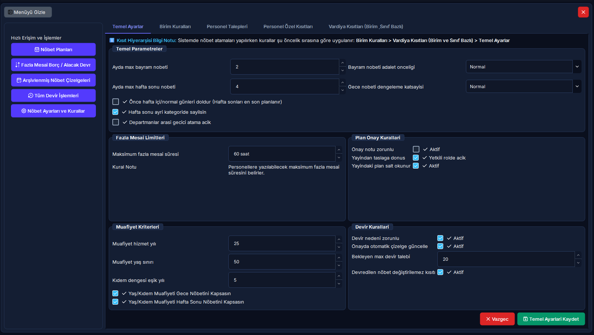

Nöbet Ayarları, Kural Piramidi & Kısıt Hiyerarşisi
RADPYS otomatik nöbet dağıtım motorunun uymak zorunda olduğu hiyerarşik kurallar, 24 saat çalışma ve asgari dinlenme standartları, departman vardiya slotları, esnek fazla mesai tavanları, 50 yaş muafiyeti ve yasal kısıt yönetim rehberi.
Modül 07 Özel Ayar ve Yönetim Kılavuzları
Modül 07 Özel Ayar ve Yönetim Kılavuzları
Onlarca karmaşık parametreyi kolayca yönetebilmeniz için her ayar sekmesi bağımsız 5N1K kılavuzuna ayrılmıştır:
Temel Ayarlar & Dinlenme
24 saat dinlenme, ardışık nöbet limiti, 60s FM tavanı ve 50 yaş muafiyeti.
Birim Slotları & Kural Kopyalama
Departman vardiya slotları, akıllı saat motoru ve mor butonla kural kopyalama.
Gelişmiş Kısıtlar & Adalet Ağırlıkları
Hizmet sınıfı kuralları, Nöbet Dağıtım Motoru adalet ceza ağırlıkları ve dengeleme.
Sağlık Kısıtları & Yasal Muafiyet
Gebe nöbet yasağı, emzirme süt saati indirimi, sendika izni ve FM Off.
Personel Talepleri & Onay Yönetimi
Personelin nöbet istememe/isteme mazeretleri, lisansüstü ders saatleri ve amir onay/red akışı.
Hızlı Reçete: Nöbet Kural Altyapısı ve Dağıtım Motoru Kısıt Düzeni
Nöbet çizelgelerinin kanuna, hekim/teknisyen sağlığına ve klinik hizmet gereksinimlerine tam uyumlu olarak hatasız üretilmesi.
[Temel Ayarlar]'dan genel sınırları belirleyin, [Birim Kuralları]'ndan slotları açın ve gerekirse [Kural Kopyala] ile aktarın.
Özel kural genel kuralı ezer; dinlenme süreleri korunur; 50 yaş muafiyeti ve fazla mesai limitleri acil ihtiyaçta yöneticiyle esnetilir.
5N1K Kural ve Arayüz Çözümleme Tablosu
Nöbet kural sisteminde yer alan bileşenlerin işlevleri, çalışma mantıkları ve Nöbet Dağıtım Motoruna etkileri.
Kritik Sahada Yanlış Bilinen Kurallar (Mit Avcısı)
Saha Mit Avcısı: "50 Yaşını veya 25 Hizmet Yılını Dolduran Personele Hiçbir Şekilde Gece Nöbeti Yazılamaz mı?"
En Sık Karşılaşılan Nöbet Dağıtım YanılgısıYanlış İnanış: "Personel 50 yaşını geçti veya 25 yıllık memur oldu; kanunen gece nöbeti yazılması kesinlikle yasaktır, servis kilitlense bile sisteme gece nöbeti eklenemez."
Doğru Gerçek: HAYIR, MUTLAK BİR YASAK DEĞİLDİR. 50 yaş veya 25 hizmet yılı kriteri, gebe/emziren personeldeki gibi mutlak bir kanuni yasaklama değil; kurum içi koruyucu bir öncelik politikasıdır. RADPYS optimizasyon motoru bu personele öncelikli olarak gündüz vardiyaları tahsis eder. Ancak serviste açık nöbet slotu kalması, personel yetersizliği veya personelin aylık zorunlu çalışma süresini dolduramaması gibi durumlarda algoritma bu kısıtı otomatik olarak esneterek gece nöbeti atayabilir. Personelin rızası ve amir onayıyla da nöbet planlanabilir.
Kural Değerlendirme ve Kısıt Çözümleme Akış Şeması
Hiyerarşik kural piramidinin nöbet dağıtım motoru tarafından değerlendirilme sırası ve esneklik kontrolleri.
Öncelik Sırası: Birim+Sınıf Birim Özel Hizmet Sınıfı Temel Ayar. Algoritma eşleştiği ilk kuralı uygular; üst basamak altı ezer.
Sağlık Koruması: Gebe veya Doz Aşımında gece/FM mutlak yasaktır. 50 yaş / 25 yıl kıdemde ise açık slot kalırsa otomatik esnetilir.
Tavan ve Onay: Kurumsal üst sınır 60 saattir. Yönetici yazılı onayıyla yasal üst tavan olan 130 saate kadar esnek izin verilir.
Arayüz Ekran Görünümleri
Temel ayarlar, kural piramidi bilgi notu ve birim slot yönetim paneli.


Adım Adım İşlem Rehberi
Saha operasyonlarında en sık kullanılan 5 ana işlemin uygulama adımları.
Temel Nöbet Parametrelerini ve Muafiyetleri Belirleme
- Sol menüden [Nöbet Yönetimi] > [Nöbet Ayarları ve Kurallar] ekranını açın.
- [Temel Ayarlar] sekmesinde klinik çalışma disiplinini belirleyin:
- Ayda Max Hafta Sonu / Bayram Nöbeti: Ayda en fazla kaç hafta sonu (örn: 4) ve bayram nöbeti (örn: 2) tutulabileceğini girin.
- Maksimum Fazla Mesai Süresi: Temel tavanı belirleyin (örn: 60 saat). (Acil durumlarda yönetici onayıyla esnetilebilir.)
- Muafiyet Kriterleri: Yaş sınırı (50) ve hizmet yılı (25) değerlerini kaydedin.
- Sağ alttaki yeşil [Temel Ayarları Kaydet] butonuna basın ve onaylayın.
Departman Nöbet Slotu Tanımlama ve Akıllı Saat Hesabı
- Üst sekme çubuğundan [Birim Kuralları] sekmesine geçin.
- Sol üstteki açılır kutudan ilgili departmanı (Örn: Acil Radyoloji) seçin.
- Alt kısımdaki Vardiya Tanımlama panelinde:
- Nöbet Adı & Kodu: "Acil Gece" / "ACL_GECE" yazın.
- Başlangıç & Süre: Başlangıç saatini 20:00 ve süreyi 12 saat yaptığınızda, akıllı saat motoru bitiş saatini otomatik olarak 08:00 yapar.
- Nöbetçi Sayısı: Bu slotta aynı anda kaç teknisyenin görev yapacağını belirleyin.
- Gün Kısıtı: "Her Gün", "Sadece Hafta İçi" veya "Sadece Hafta Sonu" seçeneklerinden birini belirleyin.
- [Birim Kuralı Ekle] butonuna tıklayarak slotu sisteme kaydedin.
Birim Kuralını Başka Birime Kopyalama (Slot Silinme Uyarılı)
- [Birim Kuralları] sekmesindeyken araç çubuğundaki mor [+ Birim Kuralını Kopyala] butonuna basın.
- Açılan pencerede Kaynak Birim (kuralları hazır olan) ve Hedef Birim seçimini yapın.
- ÖNEMLİ UYARI: Hedef birimde daha önceden tanımlanmış tüm slotlar temizlenerek kaynak birimdeki slotlar sıfırdan oluşturulacaktır.
- Ekrana gelen onay mesajında "Evet" dediğinizde tüm vardiya yapısı hedef birime saniyeler içinde kopyalanır.
Personel Nöbet İsteklerini (Mazeret / İstek) İnceleme ve Onaylama
- [Personel Talepleri] sekmesine geçin ve ilgili yıl/ay filtresini seçin.
- Personellerin ilettiği talepleri (Nöbet Yazılmasın, Nöbet Yazılsın, Eğitim Kısıtı, Fazla Mesai) tabloda inceleyin.
- İlgili talebin satırını seçin:
- Talebi kabul etmek için yeşil [İsteği Onayla] butonuna tıklayın.
- Talebi geri çevirmek için kırmızı [İsteği Reddet] butonuna tıklayın.
- Onaylanan talepler, nöbet dağıtım motoru otomatik plan oluştururken birinci öncelikle dikkate alınır.
Bireysel Sağlık ve Yasal Kısıtları (Gebe/Emzirme/Sendika) Tanımlama
- [Personel Özel Kısıtları] sekmesine gelin ve personeli arama kutusundan bulun.
- Kısıt Türü açılır kutusundan ilgili durumu seçin:
- Yasal Emzirme İzni: İlk 6 ay günde 3 saat, ikinci 6 ay 1.5 saat mesai azaltımı sağlar.
- Gebelik Muafiyeti: Gece nöbeti ve fazla mesaiyi kapatır, doz limitini 1 mSv yapar.
- Sendika İzni: Memur için haftalık 4 saat, işçi için haftalık 2 saat mesai indirimi tanımlar.
- Fazla mesai yapması kesinlikle yasak olan personel için [Fazla Mesai Yapamaz (FM Off)] kutusunu işaretleyin.
- [Kısıt Ekle] butonuna basarak kuralı devreye alın.
Sıkça Sorulan Sorular (SSS)
Birim kuralı ile genel temel ayarlar çakışırsa hangi kural geçerli olur?
RADPYS Kural Piramidi uyarınca "En Özel Kural Daima Önceliklidir". Birim kuralı, genel temel ayarlardan daha spesifik bir hiyerarşik kademede yer aldığından genel ayarı ezer (override eder). Örneğin Genel Ayarlarda ardışık nöbet 2 gün iken, Acil Radyoloji biriminde 1 gün seçilmişse Acil teknisyenlerine 1 gün kuralı uygulanır.
Aylık fazla mesai sınırı 60 saati geçerse sistem ne yapar?
Kurumsal temel tavan 60 saattir. Ancak acil servis ihtiyaçları veya olağanüstü personel eksikliklerinde bu sınır katı bir engel değildir; Yönetici Onayı ile esnetilebilir. Nihai aşılmaz tavan ise kanuni üst sınır olan 130 saattir. 130 saati aşan hiçbir fazla mesai ataması yasal olarak yapılamaz.
Birim kuralını başka bir birime kopyaladığımda eski nöbet slotları kaybolur mu?
Evet. Mükerrer nöbet tanımlarını ve vardiya saat çakışmalarını önlemek amacıyla hedef birimin mevcut tüm slotları silinir ve kaynak birimdeki slotlar sıfırdan oluşturulur. Bu nedenle kopyalama öncesi hedef birimin incelenmesi önerilir.
Nöbet bittikten sonra en az kaç saat dinlenme verilmesi zorunludur?
RADPYS sağlık standardı uyarınca bir nöbetin bitiş saati ile bir sonraki nöbetin başlangıç saati arasında en az 24 saatlik kesintisiz dinlenme süresi bulunması zorunludur. Gece nöbetleri arasında ise hekim ve teknisyenin biyolojik toparlanması için asgari 48 saatlik aralık hedeflenir.